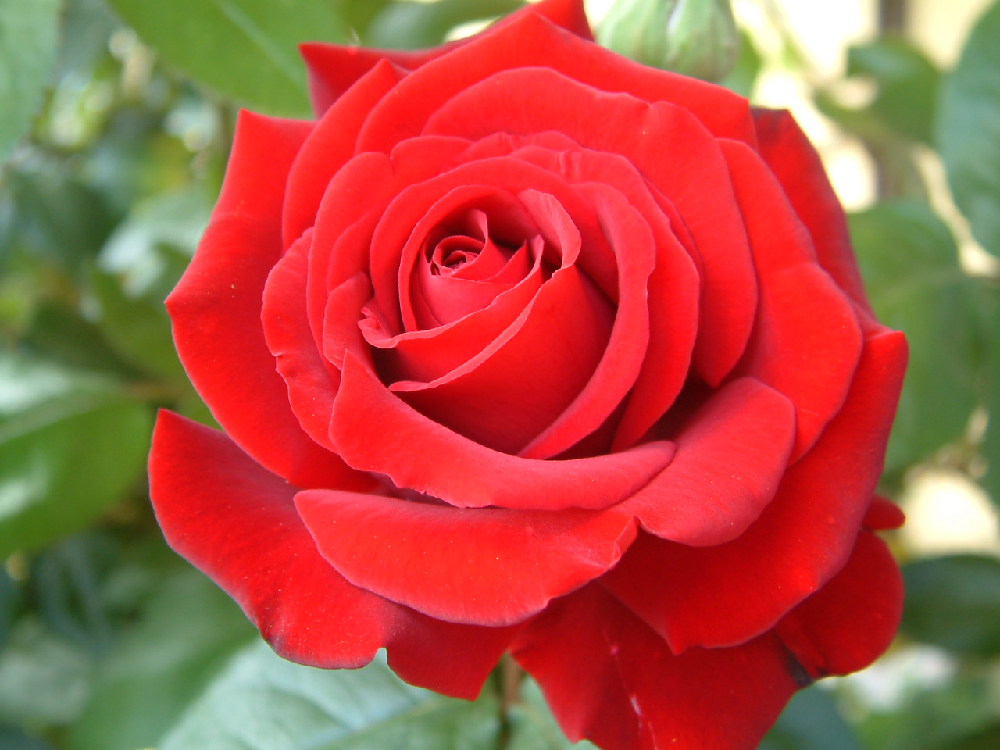
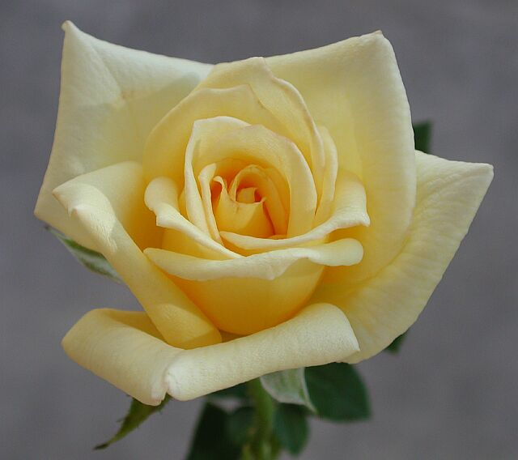
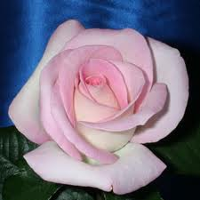

Hybrid Tea Roses
Tweet Follow @111iamtestThe favorite rose for much of the history of modern roses. They where created by hybridising Hybrid Perpetuals with Tea roses in the late 19th century. 'La France', created in 1867, is the first indication of a new class of roses. The flowers are well-formed with large, high-centred buds, and each flowering stem typically has a single shapely bloom. The bush tends to be stiffly upright and sparsely foliaged, which today is often seen as a liability in the landscape. Hybrid teas became the single most popular class of garden rose of the 20th century; today, their reputation as being more high maintenance than many other rose classes has led to a decline in hybrid tea popularity among gardeners and landscapers in favor of lower-maintenance "landscape" roses. The hybrid tea remains the standard rose of the floral industry, however, and is still favored in small gardens in formal situations.

Ingrid Bergman
This hybrid tea rose was hybridized by Poulsen in 1984. It grows upright and reaches from 4 to 5 feet in height. It has a medium, dark green, glossy, and disease resistant foliage. Its blooms are clear bright red, 35 to 40 petals each, and have an exhibition form. It has a slight, spicy fragrance. The rose won 8 awards, including the World Federation of Rose Societies Hall of Fame 2000 award. This is a compact but vigorous, hardy plant. The clear velvety red blooms have classic hybrid tea form and perform better with a little heat. The foliage adds a luxurious backdrop for this stunning beauty.

Michelangelo
This hybrid tea rose was hybridized by Meilland in 1997. It reaches 2 to 5 feet in height and 2 to 4 feet in width. It has a deep, green, and glossy foliage. It produces medium yellow double blooms, 40 to 50 petals each, and blooms are larger in warmer areas. It has a mild, lemon fragrance. The rose won 3 awards, including the Monza Gold Medal 1997 award. One of the Romantica series introduced by the Conard-Pyle Company in 1997, Michelangelo bears loads of butter yellow blossoms with a full, many-petaled, cupped, old-fashioned look.

Butter Cream
This hybrid tea rose was hybridized by Jackson & Perkins in 2003. It grows upright and reaches 5 feet in height. It has a medium, dark green, and glossy foliage. Its blooms are soft yellow, 40 petals each, and have an exhibition form. It has a light, licorice fragrance. This vigorous bush produces blooms that contrast with colors in any landscape, and this rose is great in the garden, the vase, or on trophy table.

Cajun Moon
This hybrid tea rose was hybridized by Carruth in 2001. It grows upright and reaches from 4 to 5 feet in height. It has a large, medium green, and matte foliage. Its blooms are large and white in color with a pink tinged edging, 30 to 35 petals each, and have an exhibition form. The rose has a slight, tea and rose fragrance. This vigorous plant does well both in the garden and in a vase, and its classic hybrid tea form makes it the rose of a choice to be put on a trophy table.
Crystalline
This hybrid tea rose was hybridized by Christensen $ Carruth in 1987. It grows upright, reaching from 4 to 6 feet in height, and has a bushy appearance. It has a medium, medium green, and semiglossy foliage. It produces large, pure white blossoms, 30 to 35 petals each, that have an exhibition form. The rose has a slight fragrance. This vigorous bush produces abundant blooms throughout the growing season. The blooms have exquisite form and show well in the garden, in the vase, or on the trophy table. The plant likes warm evenings and will do well in all types of landscape projects.
Gemini
This hybrid tea rose was hybridized by Zary in 1999. It grows upright, reaching 4 to 6 feet in height and 3 feet in width. It has a large, deep green, and glossy foliage. It produces cream blushing to light pink blooms with coral edges, 25 to 30 petals, that have an exhibition form. The rose has a mild, sweet fragrance. Gemini won 3 awards, including Portland Gold Medal 2003 award. This rose is one of the most popular varieties on the market. It is a terrific rose for any type of landscape. Its gorgeous blooms are prolific and borne on long stems. It produces best size and form in moderate temperatures.